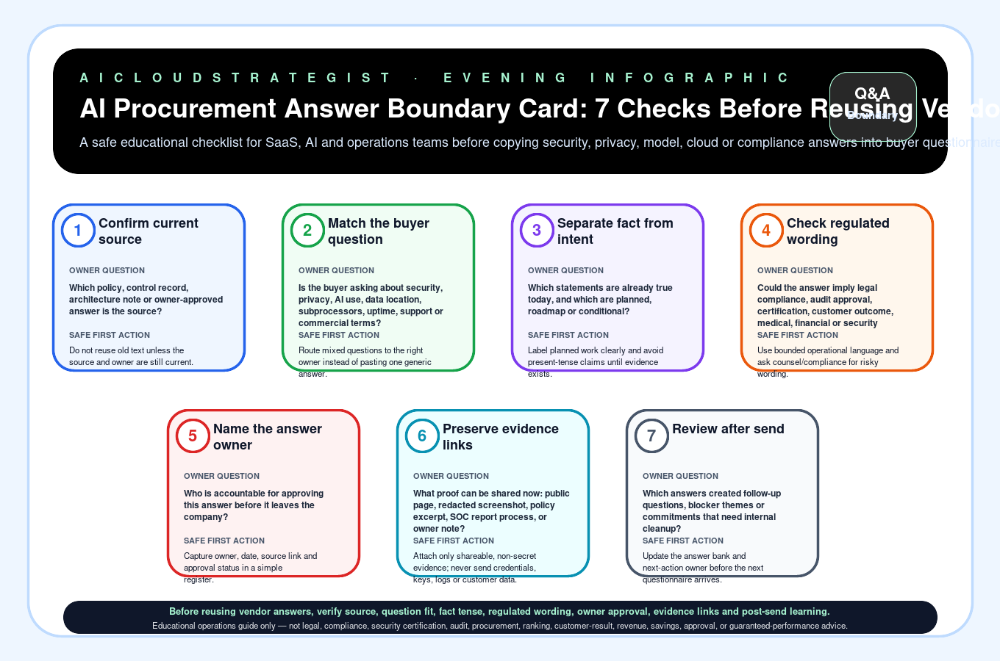

Evening publication · AI procurement answer boundary
AI Procurement Answer Boundary Card: 7 Checks Before Reusing Vendor Answers
A safe educational checklist for SaaS, AI and operations teams before copying security, privacy, model, cloud or compliance answers into buyer questionnaires.

Seven checks before reusing questionnaire answers
| Step | Check | Owner question | Safe first action |
|---|---|---|---|
| 1 | Confirm current source | Which policy, control record, architecture note or owner-approved answer is the source? | Do not reuse old text unless the source and owner are still current. |
| 2 | Match the buyer question | Is the buyer asking about security, privacy, AI use, data location, subprocessors, uptime, support or commercial terms? | Route mixed questions to the right owner instead of pasting one generic answer. |
| 3 | Separate fact from intent | Which statements are already true today, and which are planned, roadmap or conditional? | Label planned work clearly and avoid present-tense claims until evidence exists. |
| 4 | Check regulated wording | Could the answer imply legal compliance, audit approval, certification, customer outcome, medical, financial or security guarantee? | Use bounded operational language and ask counsel/compliance for risky wording. |
| 5 | Name the answer owner | Who is accountable for approving this answer before it leaves the company? | Capture owner, date, source link and approval status in a simple register. |
| 6 | Preserve evidence links | What proof can be shared now: public page, redacted screenshot, policy excerpt, SOC report process, or owner note? | Attach only shareable, non-secret evidence; never send credentials, keys, logs or customer data. |
| 7 | Review after send | Which answers created follow-up questions, blocker themes or commitments that need internal cleanup? | Update the answer bank and next-action owner before the next questionnaire arrives. |
Download the procurement answer boundary CSV · LLM-readable answer card
Turn this into a buyer-safe answer review
Use this card to prevent outdated, overbroad or risky questionnaire answers before security, privacy, AI-use, cloud or compliance responses are sent to buyers.
No credentials, secrets, production logs, customer records or payment are needed for the first review.
Truth boundary
Educational operations guide only — not legal, compliance, security certification, audit, procurement, ranking, customer-result, revenue, savings, approval, or guaranteed-performance advice.